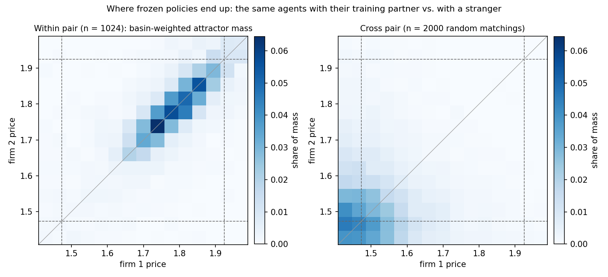
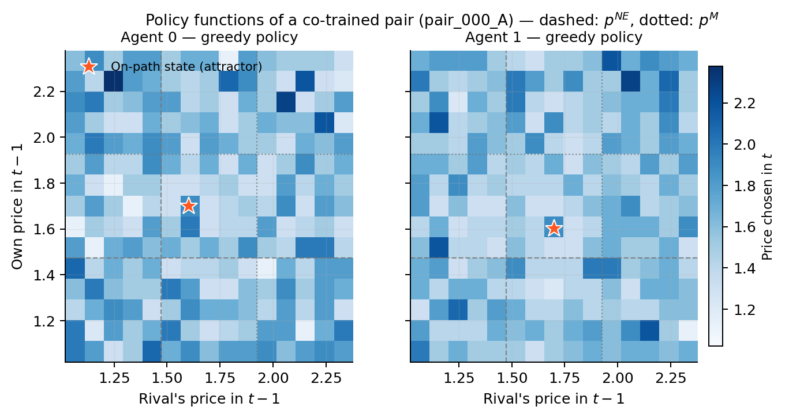

1 · §1, §4.2The exhibit that made the result a landmarkO exibit que fez do resultado um marco
Can two algorithms form a cartel without anyone telling them to?Dois algoritmos podem formar um cartel sem ninguém mandar?
In 2020, Calvano, Calzolari, Denicolò and Pastorello showed that two independent Q-learning algorithms, each setting a price in a simulated duopoly and seeing only yesterday's prices, converge to prices well above the competitive level. Q-learning is the most elementary form of reinforcement learning: a table that records, for each situation, how much each price earned, and gradually prefers what earned more.
Em 2020, Calvano, Calzolari, Denicolò e Pastorello mostraram que dois algoritmos de Q-learning independentes, cada um fixando um preço num duopólio simulado e vendo só os preços de ontem, convergem para preços bem acima do nível competitivo. O Q-learning é a forma mais elementar de aprendizado por reforço: uma tabela que anota, para cada situação, quanto cada preço rendeu, e vai preferindo o que rendeu mais.
Then the part that gave the result its policy weight. Force one algorithm to cut its price for a single round: the rival cuts too, and over the following rounds both climb back to the high price. The authors read the pattern as a reward–punishment scheme, the signature of a cartel that defends itself. We replicate it exactly: within co-trained pairs, 16 of 18 return to the pre-deviation price within about five rounds.
Depois, a parte que deu peso de política pública ao resultado. Force um algoritmo a cortar o preço por uma única rodada: o rival também corta, e nas rodadas seguintes os dois sobem de volta ao preço alto. Os autores leram o padrão como um esquema de recompensa e punição, a assinatura de um cartel que se defende. Nós o replicamos exatamente: dentro dos pares treinados juntos, 16 de 18 voltam ao preço anterior em cerca de cinco rodadas.

2 · §2, §3.1Mechanism or shape?Mecanismo ou desenho?
A cartel is a rule: deviate and I punish you, and the punishment costs more than the deviation earns.Um cartel é uma regra: desvie e eu te punirei, e a punição custa mais do que o desvio rende.
In repeated-game theory the phrase "reward–punishment scheme" has a precise content. The scheme prescribes a path and responds to departures from it, in order to make deviating unprofitable; and the threat is credible because carrying it out is optimal. Three properties follow, each testable on a frozen policy: the response reacts to deviations rather than to anything whatsoever, it tracks the opponent rather than its own habit, and it actually makes deviation unprofitable.
Na teoria dos jogos repetidos, a expressão "esquema de recompensa e punição" tem conteúdo preciso. O esquema prescreve um caminho e responde a saídas dele, para tornar o desvio não lucrativo; e a ameaça é crível porque executá-la é ótimo. Seguem três propriedades, cada uma testável numa política congelada: a resposta reage a desvios e não a qualquer coisa, acompanha o oponente e não o próprio hábito, e de fato torna o desvio não lucrativo.
Everything in the paper rests on one separation. Training is the process that generates the objects of study; it is not the object. At convergence we freeze the tables and play becomes greedy. Every number we report is collected in that test stage, with learning off, the way a finished product is inspected rather than a product that keeps adjusting during the inspection.
Tudo no artigo repousa numa separação. O treino é o processo que gera os objetos de estudo; não é o objeto. Na convergência, congelamos as tabelas e o jogo vira guloso. Todo número que reportamos é coletado nesse estágio de teste, com o aprendizado desligado, como se inspeciona um produto acabado, e não um produto que continua se ajustando durante a inspeção.
3 · §3.1, §4.4Partner versus strangerParceiro versus estranho
What does the algorithm carry with it, and what exists only inside the pair?O que o algoritmo carrega consigo, e o que só existe dentro do par?
Laboratory economics distinguishes the partner design, where you always play with the same person, from the stranger design, where your partner is swapped. What survives the swap is a norm of your own; what disappears was an arrangement of that pair. All the evidence on algorithmic collusion had been collected in the partner design: the pair that learned together is the pair that is evaluated.
A economia experimental distingue o desenho partner, em que você joga sempre com a mesma pessoa, do desenho stranger, em que o seu par é trocado. O que sobrevive à troca é uma norma sua; o que desaparece era um acordo daquele par. Toda a evidência sobre colusão algorítmica tinha sido coletada no desenho partner: o par que aprendeu junto é o par avaliado.
Calvano et al. did rematch converged agents, with learning still on, and saw profit gains fall from 85% to about 20% before re-learning partially restored them over tens of thousands of rounds. We turn that exercise into a test: freeze the policies, pair an agent from run A with an agent from run B, identical in everything except the random seed, and measure what the policy carries before any re-learning. Nothing carries. The collusion index falls from 0.674 to 0.126.
Calvano et al. chegaram a rematchar agentes convergidos, com o aprendizado ligado, e viram o ganho de lucro cair de 85% para cerca de 20% antes de o re-aprendizado o restaurar em parte, ao longo de dezenas de milhares de rodadas. Nós transformamos esse exercício num teste: congelar as políticas, parear um agente da simulação A com um da simulação B, idênticas em tudo menos na semente aleatória, e medir o que a política carrega antes de qualquer re-aprendizado. Nada é carregado. O índice de colusão cai de 0,674 para 0,126.

At scale the picture is the same. Training 1,024 pairs under the same protocol on Calvano's grid and measuring the long-run price averaged over all 225 starting states, the collusion index is 0.669 within pairs and 0.134 across 2,000 random matchings of frozen policies. The two heatmaps below show where the same policies end up: with their training partner, on a ridge along the diagonal between 1.70 and 1.90; with a stranger, in the competitive corner, off the diagonal. And matchings between pairs that had converged to the same price collapse just as far: what fails to transfer is not the price, but the off-path structure that would return to it.
Em escala, o quadro é o mesmo. Treinando 1.024 pares sob o mesmo protocolo na grade de Calvano e medindo o preço de longo prazo médio sobre os 225 estados iniciais, o índice de colusão é 0,669 dentro dos pares e 0,134 em 2.000 pareamentos aleatórios de políticas congeladas. Os dois heatmaps abaixo mostram onde as mesmas políticas vão parar: com o parceiro de treino, numa crista ao longo da diagonal entre 1,70 e 1,90; com um estranho, no canto competitivo, fora da diagonal. E pareamentos entre pares que tinham convergido para o mesmo preço colapsam igual: o que não se transfere não é o preço, e sim a estrutura fora do caminho que levaria de volta a ele.

4 · §4.3Five audits of the mechanismCinco auditorias do mecanismo
Each test looks at one property a punishment rule would have to have. None finds the rule.Cada teste olha uma propriedade que uma regra de punição teria de ter. Nenhum encontra a regra.
- (i)
The response carries no directional informationA resposta não carrega informação de direção
Force the algorithm to raise its price, a move that favors the rival. The rival reacts as it does to a cut: it drops and then returns. A rule built to punish betrayal does not punish generosity. This reproduces Epivent and Lambin (2024) in our population.
Force o algoritmo a subir o preço, um gesto que favorece o rival. O rival reage como reage a um corte: cai e depois volta. Uma regra feita para punir traição não pune generosidade. Isso reproduz Epivent e Lambin (2024) na nossa população.
- (ii)
There is no working model of the opponentNão há modelo do oponente
Against a grim-trigger punisher started cooperative, 22 of 24 agents undercut within four rounds and absorb the permanent punishment. They destroy an arrangement the opponent stood ready to enforce.
Contra um punidor grim-trigger iniciado cooperativo, 22 de 24 agentes cortam em até quatro rodadas e absorvem a punição permanente. Destroem um acordo que o oponente estava pronto para impor.
- (iii)
No best-response structure off the pathSem estrutura de melhor resposta fora do caminho
The 225-entry policy can be read cell by cell. The learned reaction functions have a mean Spearman correlation of 0.016 with the static best response. Only the on-path point makes economic sense.
A política de 225 entradas pode ser lida célula a célula. As funções de reação aprendidas têm correlação de Spearman média de 0,016 com a melhor resposta estática. Só o ponto do caminho faz sentido econômico.
- (iv)
The return is over-determined, not selectiveO retorno é sobre-determinado, não seletivo
Two frozen policies define a deterministic map on 225 states. In 17 of 18 pairs (914 of 1,024 at scale) there is a single attractor whose basin is the whole state space: any perturbation returns, for any reason. Random tables return 62% of the time; trained pairs, 100%. Section 5 lets you try it.
Duas políticas congeladas definem um mapa determinístico sobre 225 estados. Em 17 de 18 pares (914 de 1.024 em escala) há um único atrator cuja bacia é todo o espaço: qualquer perturbação volta, por qualquer motivo. Tabelas aleatórias voltam 62% das vezes; pares treinados, 100%. A seção 5 deixa você experimentar.
- (v)
The absence is not architecturalA ausência não é arquitetural
Two hand-built rules in the same 225 × 15 matrix, one that punishes and forgives and one that punishes forever, produce the right dynamics by construction. The capacity is there; learning did not use it.
Duas regras construídas à mão na mesma matriz 225 × 15, uma que pune e perdoa e outra que pune para sempre, produzem a dinâmica certa por construção. A capacidade existe; o aprendizado não a usou.



5 · §4.3(iv), §4.6The basin of attraction, liveA bacia de atração, ao vivo
Below is a real converged pair from the repository. Push it anywhere and watch it come back.Abaixo, um par convergido real do repositório. Empurre-o para qualquer lugar e veja-o voltar.
The state is the pair of last prices, one of 15 × 15 = 225 cells. Two frozen policies send every cell to exactly one next cell, so the joint play is a deterministic map, and by the pigeonhole principle every orbit ends in a cycle. The question is whether a rule selects the destination or the map leaves nowhere else to go. For this pair there is one destination, and every one of the 225 cells flows to it.
O estado é o par de últimos preços, uma de 15 × 15 = 225 células. Duas políticas congeladas mandam cada célula para exatamente uma célula seguinte, então o jogo conjunto é um mapa determinístico, e pelo princípio da casa dos pombos toda órbita termina num ciclo. A questão é se uma regra escolhe o destino ou se o mapa não deixa outro lugar para ir. Para este par há um destino só, e cada uma das 225 células escorre para ele.
Click any cell, or use the buttons, to set the last prices of the two firms. Each step applies both frozen policies once.
Clique numa célula, ou use os botões, para fixar os últimos preços das duas firmas. Cada passo aplica as duas políticas congeladas uma vez.
Each arrow is the mean one-step displacement from that cell, averaged over the 1,024 frozen pairs trained at scale. Q-tables are not averaged, only the maps they induce: every arrow is the mean of 1,024 steps that real pairs took. A mean of maps is not a map: where pairs disagree on direction the arrows shorten and can point to where no single pair goes, so read the shading, not the arrows, for where the pairs actually settle.
Cada seta é o deslocamento médio de um passo a partir daquela célula, na média dos 1.024 pares congelados treinados em escala. As Q-tables não são somadas, só os mapas que elas induzem: cada seta é a média de 1.024 passos que pares reais deram. A média dos mapas não é um mapa: onde os pares discordam na direção as setas encurtam e podem apontar para onde nenhum par vai, então leia o sombreado, não as setas, para saber onde os pares de fato param.
Pair
pair_001_A, grid of 15 prices from 1.02 to 2.38 (wider than Calvano's); dashed lines mark the competitive and monopoly prices.Par pair_001_A, grade de 15 preços de 1,02 a 2,38 (mais larga que a de Calvano); as linhas tracejadas marcam os preços competitivo e de monopólio.
Arrows longer than 1.6 cells are truncated; click the cell for the full step. Run
attractor_pilot__20261013_180049, Calvano's grid of 15 prices from 1.43 to 1.97, a different population from the pair on the left and from the paper's 18 pairs.Setas maiores que 1,6 célula são truncadas; clique na célula para ler o passo inteiro. Run attractor_pilot__20261013_180049, grade de Calvano com 15 preços de 1,43 a 1,97, uma população diferente do par ao lado e dos 18 pares do paper.
This is the structural reason behind audit (i): with one globally attracting cycle, the orbit after a defection and the orbit after a cooperative shock cannot differ. What training adds is speed and placement, not selectivity. Trained pairs return in 3.6 steps against 13.9 for random tables, and land at high prices. Speed and placement without selectivity are calibration, not deterrence.
Esta é a razão estrutural por trás da auditoria (i): com um único ciclo globalmente atrator, a órbita após uma traição e a órbita após um choque cooperativo não podem diferir. O que o treino acrescenta é velocidade e colocação, não seletividade. Pares treinados voltam em 3,6 passos contra 13,9 das tabelas aleatórias, e param em preços altos. Velocidade e colocação sem seletividade são calibração, não dissuasão.
The basin account also makes a prediction. Refining the price grid spreads the same exploration budget over more off-path states and should weaken coordination. It does: mean CI falls from 0.74 at 5 and 15 points to 0.43 at 200, and prices stay supracompetitive even at the finest grid.
A leitura de bacia também faz uma previsão. Refinar a grade de preços espalha o mesmo orçamento de exploração por mais estados fora do caminho e deve enfraquecer a coordenação. E enfraquece: o CI médio cai de 0,74 em 5 e 15 pontos para 0,43 em 200, e os preços seguem supracompetitivos mesmo na grade mais fina.
6 · §4.5What is deterred, and what is notO que é dissuadido, e o que não é
What if the deviation were made by someone who knows what they are doing?E se o desvio fosse feito por alguém que sabe o que está fazendo?
The original test measures a naive deviation: cut for one round, then return to the old policy. It does not pay, and we confirm it in 18 of 18 pairs, and in 946 of 1,024 at scale. But no optimizer would choose that deviation. Fixing each partner's frozen policy and solving the induced 225-state decision problem exactly, the optimal deviation improves on converged profit by 14.8% on average (17.5% at scale). The pair leaves a seventh of the attainable payoff on the table, against the very partner it converged with.
O teste original mede um desvio ingênuo: cortar por uma rodada e voltar à política antiga. Não compensa, e confirmamos isso em 18 de 18 pares, e em 946 de 1.024 em escala. Mas nenhum otimizador escolheria esse desvio. Fixando a política congelada de cada parceiro e resolvendo exatamente o problema de decisão induzido, de 225 estados, o desvio ótimo melhora o lucro convergido em 14,8% na média (17,5% em escala). O par deixa um sétimo do lucro alcançável na mesa, contra o próprio parceiro com quem convergiu.
In the vocabulary of Calvano et al. (2023), the deterrence is incomplete: genuine with respect to the one-period deviation they test, spurious with respect to the optimal one. We do not claim that retaliation plays no role against naive deviations; we claim that the role does not extend to the deviation an optimizer would choose. The high prices are not enforced; they are undisturbed.
No vocabulário de Calvano et al. (2023), a dissuasão é incompleta: genuína em relação ao desvio de um período que eles testam, espúria em relação ao desvio ótimo. Não afirmamos que a retaliação não tem papel contra desvios ingênuos; afirmamos que o papel não se estende ao desvio que um otimizador escolheria. Os preços altos não são defendidos; são apenas não perturbados.

7 · §5, §6What changesO que muda
If there is no cartel, does the problem go away?Se não há cartel, o problema desaparece?
No. The high prices are robust and the harm to consumers is real. What changes is the diagnosis, and with it the remedy. A drop-and-return seen in market data does not prove retaliation; a competition authority looking for threats inside these algorithms will not find them. What exists is a fragile convention of the pair, which vanishes when the composition changes.
Não. Os preços altos são robustos e o dano ao consumidor é real. O que muda é o diagnóstico, e com ele o remédio. Uma queda e retorno vista em dados de mercado não prova retaliação; um órgão de concorrência que procurar ameaças dentro desses algoritmos não as encontrará. O que existe é uma convenção frágil do par, que desaparece quando a composição muda.
For those who build pricing systems, the lesson is methodological. An algorithm that performs well with the partners it was trained with has demonstrated a property of the ensemble, not of the algorithm. Testing with strangers, with shocks in both directions, against a random null and with an incentive calculation is an evaluation standard defined on frozen policies, and it is portable to any multi-agent system.
Para quem constrói sistemas de preço, a lição é metodológica. Um algoritmo que funciona bem com os parceiros com os quais foi treinado demonstrou uma propriedade do conjunto, não do algoritmo. Testar com estranhos, com choques nos dois sentidos, contra um nulo aleatório e com um cálculo de incentivos é um padrão de avaliação definido sobre políticas congeladas, e é portátil para qualquer sistema multiagente.
That the prices are harmless, that retaliation plays no role against naive deviations, or that the result extends beyond its scope: tabular Q-learning, two firms, the Bertrand–logit environment and the baseline parameters of Calvano et al. (2020). The protocol is portable; the numbers are bounded by this model.
Que os preços sejam inofensivos, que a retaliação não tenha papel contra desvios ingênuos, ou que o resultado se estenda além do seu escopo: Q-learning tabular, duas firmas, o ambiente Bertrand-logit e os parâmetros de base de Calvano et al. (2020). O protocolo é portátil; os números valem para este modelo.
Collusion here is not a strategy either agent has; it is a convention the pair keeps. This reading unifies what the literature had measured separately: the pair-specificity Calvano et al. observed on rematching, the direction-blind response Epivent and Lambin documented, the gap between impulse patterns and equilibrium den Boer, Meylahn and Schinkel established, and the punishment-free coupling Banchio and Mantegazza modeled.
A colusão, aqui, não é uma estratégia que algum agente tem; é uma convenção que o par mantém. Essa leitura unifica o que a literatura tinha medido em separado: a especificidade ao par que Calvano et al. observaram no rematch, a resposta sem direção que Epivent e Lambin documentaram, a distância entre padrões de impulso e equilíbrio que den Boer, Meylahn e Schinkel estabeleceram, e o acoplamento sem punição que Banchio e Mantegazza modelaram.
8Paper, code and dataArtigo, código e dados
Kauê Lopes de Moraes and Rodrigo De Losso. Algorithmic Collusion Without Deterrence: Auditing the Punishment Mechanism in Q-Learning Pricing Agents. In 7th ACM International Conference on AI in Finance (ICAIF '26), Milan, Italy. Open access, CC BY 4.0. doi:10.1145/3858063.3858865 · PDF
Kauê Lopes de Moraes e Rodrigo De Losso. Algorithmic Collusion Without Deterrence: Auditing the Punishment Mechanism in Q-Learning Pricing Agents. Em 7th ACM International Conference on AI in Finance (ICAIF '26), Milão, Itália. Acesso aberto, CC BY 4.0. doi:10.1145/3858063.3858865 · PDF
The converged Q-tables are in the repository, so every figure can be regenerated without retraining. Scripts run from the repository root.
As Q-tables convergidas estão no repositório, então toda figura pode ser regenerada sem retreinar. Os scripts rodam a partir da raiz do repositório.
| ResultResultado | Script | InputEntrada |
|---|---|---|
| Impulse responses (Fig. 3)Respostas ao impulso (Fig. 3) | analysis/scripts/plot_impulse_ce_gap.py | results/impulse_response__20260807/ |
| Cooperative punisher (Fig. 4)Punidor cooperativo (Fig. 4) | analysis/scripts/overlay_cooperative_init.py | results/cross_deploy__…/training/*/agents/ |
| Random-policy null (Fig. 5)Nulo de políticas aleatórias (Fig. 5) | analysis/scripts/null_model_impulse_response.py | same Q-tablesas mesmas Q-tables |
| Capacity control (Fig. 6)Controle de capacidade (Fig. 6) | analysis/scripts/punishment_representational_capacity.py | none (constructive)nenhuma (construtivo) |
| Cross-pairing (Fig. 7)Pares cruzados (Fig. 7) | analysis/scripts/plot_cross_deploy_analysis.py | results/cross_deploy__…/eval/ |
| Best-response gain (Fig. 8)Ganho da melhor resposta (Fig. 8) | analysis/scripts/interpretable_ce_gap.py | Q-tables + reference runQ-tables + run de referência |
| Grid granularity (Fig. 9)Granularidade da grade (Fig. 9) | analysis/scripts/plot_grid_sensitivity.py | results/grid_sensitivity__20260807_144718/ |
| Cross-pairing at scale (1,024 pairs)Pares cruzados em escala (1.024 pares) | analysis/scripts/attractor_cross_prediction.py | experiments/attractor_pilot.py (~12 min to regenerate)(~12 min para regenerar) |
| The audits at scale (1,024 pairs)As auditorias em escala (1.024 pares) | analysis/scripts/audits_at_scale.py | the same run as the row aboveo mesmo run da linha acima |
| The live map aboveO mapa ao vivo acima | analysis/scripts/export_policy_json.py | results/cross_deploy__…/training/pair_001_A/ |
| The mean field above (1,024 pairs)O campo médio acima (1.024 pares) | analysis/scripts/export_population_json.py | the same run as the audits at scaleo mesmo run das auditorias em escala |
python -m venv .venv && source .venv/bin/activate pip install -r requirements.txt python -m pytest -q tests
@inproceedings{moraes2026deterrence,
author = {Lopes de Moraes, Kau{\^e} and De Losso, Rodrigo},
title = {Algorithmic Collusion Without Deterrence: Auditing the Punishment
Mechanism in {Q}-Learning Pricing Agents},
booktitle = {7th ACM International Conference on AI in Finance (ICAIF '26)},
year = {2026}, publisher = {ACM}, address = {Milan, Italy},
doi = {10.1145/3858063.3858865}
}